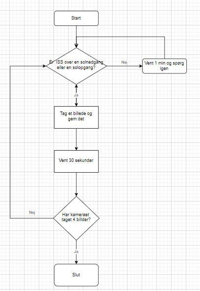

AstroPi
Projektbeskrivelse: Vi vil gerne undersøge om der er farveforskelle mellem solopgange og solnedgange.
Gennemgang af ESA: ESA har nogle krav til
Beskrivelse af sensorer: Vi vil bruge kamaraet som kigger ned mod jorden. Det tager ISS 1 1/2 time at bevæge sig en gang rundt om jorden og da vi har adgang til ISS i 3 timer vil vi opleve 2 solopgange og 2 solnedgange. Vi har tænkt os at tage billeder af disse solopgange og solnedgange. Vi vil derefter lave en analyse af RGB og lysniveauerne pr. pixel.
Grundig beskrivelse af sensor:
Gennemgang af kodestumper:
Programkode:
Vurdering af om koden lever op til ESA's krav:
Vores kode lever op til alle kravene af følgende årsager.
Vores program kan køre selvstændigt og er dermed uafhængig af om en astronaut er ledig.
Det er et videnskabeligt eksperiment og ikke et spil.
Vores program har ikke brug for live kommunikation med AstroPi på ISS.
Det er ikke relevant for vores program hvornår på dagen vores program kører.
Vores program er ikke afhængig af at der sker noget usædvanligt. Tværtimod så ved vi med sikkerhed at der vil over de 3 timer forekomme 2 solopgange og 2 solnedgange uanset hvornår i dansk tid programmet kører.
Vi skal kun tage billeder og gemme dem hvilket ikke kommer til at fylde mere end 3gb. Dette ved vi eftersom billeder ikke fylder så meget. Så mange skal vi heller ikke tage.
Vores program skal ikke bruge andet yderligere udstyr eller adgang til noget andet på ISS.
Flowchart
